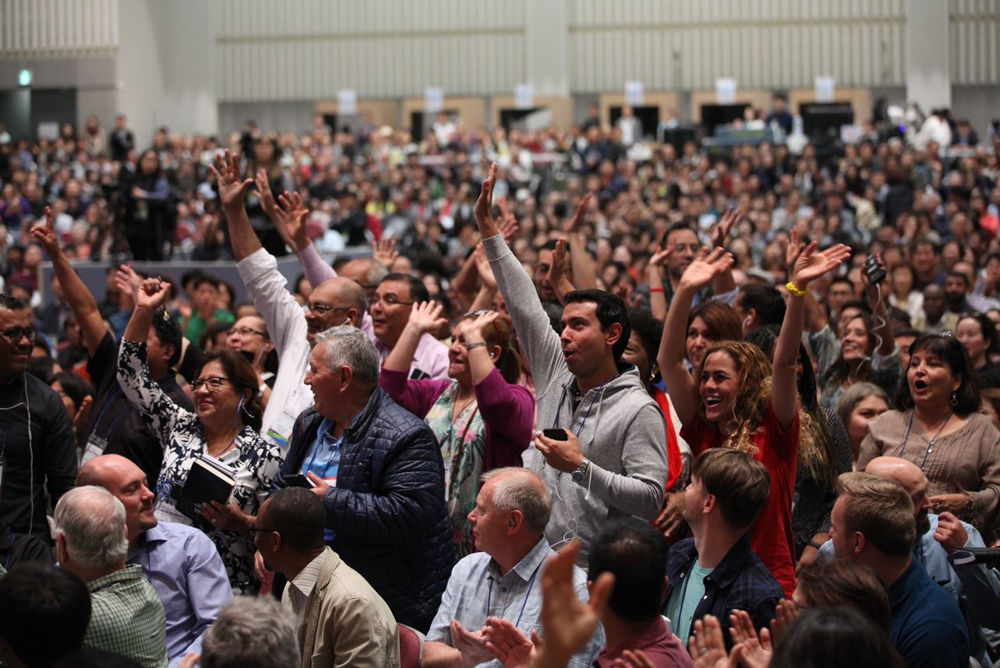

“I attended Mission Camp for the first time in 2016. It changed my life. I have been a pastor for over 30 years and taken many mission teams to the nations, but the vision and passion and clarity of calling of the InterCP International movement stunned me!”

“But after Vision School, I confessed and repented before the Lord. I want to seek after the will and agenda of God alone. I will turn away from the love of the world with God’s strength and devote my life to Him!”